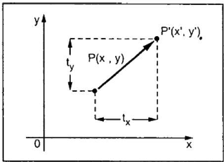
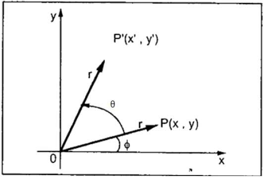
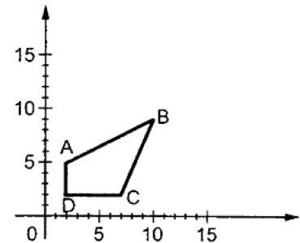
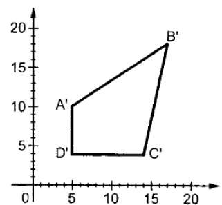
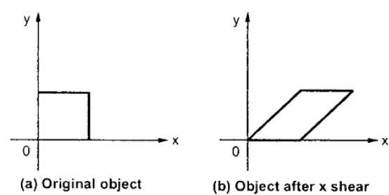
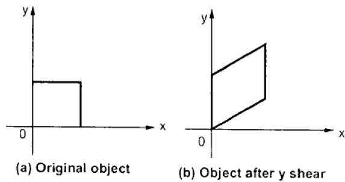
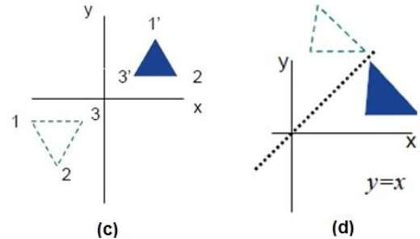
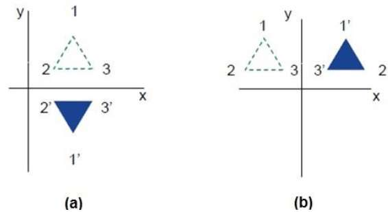

2D TRANSFORMATIONS
Transformation means changing some graphics into something else by applying rules. We can have various types of transformations such as translation, scaling up or down, rotation, shearing, etc. When a transformation takes place on a 2D plane, it is called 2D transformation.
Transformations play an important role in computer graphics to reposition the graphics on the screen and change their size or orientation.
TRANSLATION
A translation moves an object to a different position on the screen. You can translate a point in 2D by adding translation coordinate (tx, ty) to the original coordinate (X, Y) to get the new coordinate (X’, Y’).

ROTATION
In rotation, we rotate the object at particular angle θ (theta) from its origin. From the following figure, we can see that the point P(X, Y) is located at angle φ from the horizontal X coordinate with distance r from the origin.
Let us suppose you want to rotate it at the angle θ. After rotating it to a new location, you will get a new point P’ (X’, Y’).

Using standard trigonometric the original coordinate of point P(X, Y) can be represented as −
X=rcosϕ......(1)
Y=rsinϕ......(2)
Same way we can represent the point P’ (X’, Y’) as −
x′=rcos(ϕ+θ)=rcosϕcosθ−rsinϕsinθ.......(3)
y′=rsin(ϕ+θ)=rcosϕsinθ+rsinϕcosθ.......(4)
Substituting equation (1) & (2) in (3) & (4) respectively, we will get
x′=xcosθ−ysinθ
y′=xsinθ+ycosθ
Representing the above equation in matrix form,
[X′Y′]=[XY] [cosθ −sinθ sinθ cosθ] OR
P’ = P . R
Where R is the rotation matrix
R=[cosθ −sinθ sinθ cosθ]
The rotation angle can be positive and negative.
For positive rotation angle, we can use the above rotation matrix. However, for negative angle rotation, the matrix will change as shown below −
R=[cos(−θ) −sin(−θ) sin(−θ) cos(−θ)]
=[cosθ sinθ −sinθ cosθ](∵cos(−θ)=cosθ and sin(−θ)=−sinθ)
SCALING
To change the size of an object, scaling transformation is used. In the scaling process, you either expand or compress the dimensions of the object. Scaling can be achieved by multiplying the original coordinates of the object with the scaling factor to get the desired result.
Let us assume that the original coordinates are (X, Y), the scaling factors are (SX, SY), and the produced coordinates are (X’, Y’). This can be mathematically represented as shown below −
X' = X . SX and Y' = Y . SY
The scaling factor SX, SY scales the object in X and Y direction respectively. The above equations can also be represented in matrix form as below −
(X′Y′)=(XY)[Sx 0 0 Sy]
OR
P’ = P . S
Where S is the scaling matrix. The scaling process is shown in the following figure.


If we provide values less than 1 to the scaling factor S, then we can reduce the size of the object. If we provide values greater than 1, then we can increase the size of the object.
SHEAR
A transformation that slants the shape of an object is called the shear transformation. There are two shear transformations X-Shear and Y-Shear. One shifts X coordinates values and other shifts Y coordinate values. However; in both the cases only one coordinate changes its coordinates and other preserves its values. Shearing is also termed as Skewing.
X-Shear
The X-Shear preserves the Y coordinate and changes are made to X coordinates, which causes the vertical lines to tilt right or left as shown in below figure.

The transformation matrix for X-Shear can be represented as −
Xsh=⎡⎣⎢ 1 shx 0 0 1 0 0 0 1 ⎤⎦⎥
X' = X + Shx . Y
Y’ = Y
Y-Shear
The Y-Shear preserves the X coordinates and changes the Y coordinates which causes the horizontal lines to transform into lines which slopes up or down as shown in the following figure.

The Y-Shear can be represented in matrix from as −
Ysh= ⎡⎣⎢ 1 0 0 shy 1 0 0 0 1 ⎤⎦⎥
Y’ = Y + Shy . X
X’ = X
Reflection
Reflection is the mirror image of original object. In other words, we can say that it is a rotation operation with 180°. In reflection transformation, the size of the object does not change.
The following figures show reflections with respect to X and Y axes, and about the origin respectively.


Simulation assumptions and constraints:-
- All the transformations are done with respect to the center of the object. Therefore any transformation applied to the point will be reflected to the shape.
- New rotation does not adds to its previous rotated angle.
- Some transformations are not bounded to the canvas.
- Other transformations are disabled when object is sheared.
Theory source : www.tutorialspoint.com